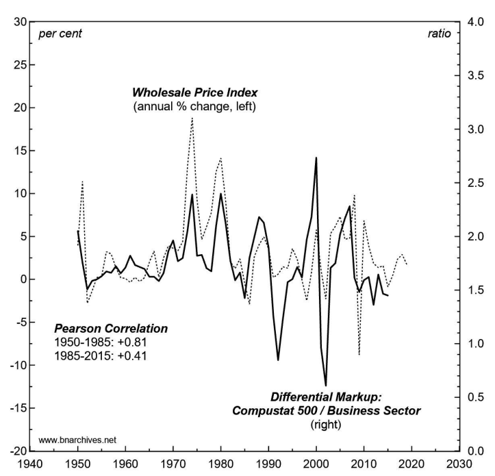
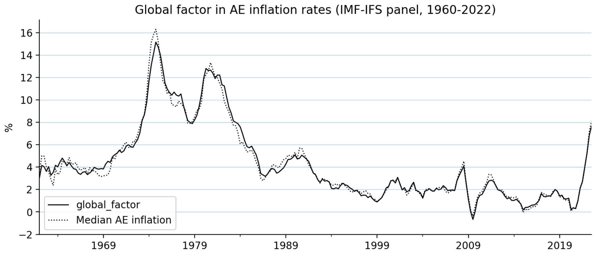
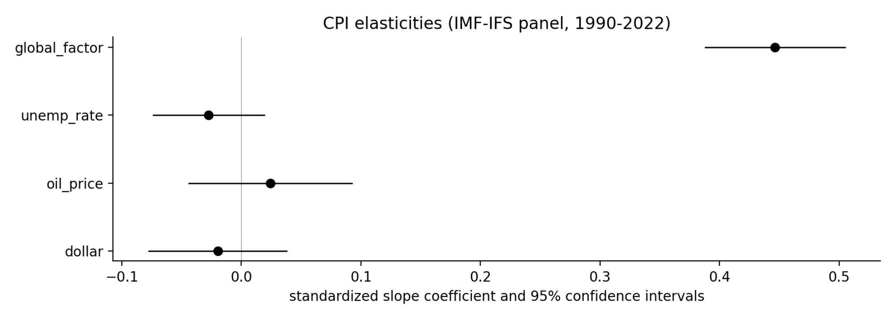

47 Inflation
Inflation is about power, not money.
Contrary to the fantasy world of neoclassical economics — in which businesses ‘take’ prices from the market — in the real world, prices are always ‘set’.
mainstream economists believe that elevated inflation is a result of “excess” aggregate demand.
47.1 Stagflation
Napier
Stagflation is the combination of high inflation and high unemployment. That’s not what we have today, as we have record low unemployment. You get stagflation after years of badly misallocated capital, which tends to happen when the government interferes for too long in the allocation of capital.
Napier (2022) We Will See the Return of Capital Investment on a Massive Scale
Fix
Inflation in the midst of stagnation is not an anomaly. If anything, it is the general rule.
Stagflation is a business strategy
The idea is that ‘stagflation’ — economic stagnation combined with high inflation — is not some exogenous ‘market shock’. According to Nitzan and Bichler, stagflation is a business strategy — one of two main routes to profit.
The first route to profit is for businesses to hold prices steady while they try to sell more stuff. The second route is to jack up prices. Since this latter option requires restricting the flow of resources (stuff that flows freely cannot be dear), Nitzan and Bichler reason that when inflation rears its head, it ought to come with economic stagnation. In other words, stagflation is the norm.
If this stagflation thesis is correct, then inflation ought to correlate negatively with economic growth. Looking at the United States, Nitzan and Bichler find evidence that it does. Here, I broaden their stagflation research by looking at all countries in the World Bank’s global development database.
I find that both within and across countries, economic growth (measured in terms of energy use) tends to decline as inflation increases. So Nitzan and Bichler appear to be onto something. Over the last half century, stagflation is the general rule.
The reason is that to many people, the word ‘inflation’ implies a decrease in the purchasing power of money. Although not wrong, the problem with this interpretation is that it is needlessly indirect. Framing inflation in terms of decreasing purchasing power is like discussing your child’s growth in terms of the ‘shrinking height capacity’ of your doors. Sure, it’s true in a sense. But it is also tediously circuitous. The fact remains that it is your child (not your doors) who changes.
The same is true of inflation. When inflation rears its head, money appears to lose its value. But the reality is that it is prices (not the nature of money) that change. So if we want to understand the phenomenon of ‘inflation’, we should study prices directly.
As a social species, humans have an intense desire to conform to social norms. Sometimes this desire leads to stability — as with religious traditions that last for centuries. Other times, though, conformity leads to social change.
Fashion is a good example of both tendencies. As individuals, we like to dress the same as other people, leading to a (relative) uniformity in our attire. And yet over time, fashion changes — a herd behavior in which people conform to the new way of dressing. And so we get coordination (changing fashion) through conformity.
Something similar happens with businesses. Often, businesses compete by cutting costs and increasing the amount of stuff they sell. But this is not the only mode of competition. Sometimes, a business raises its prices and its competitor responds by doing the same. If enough businesses join in, suddenly we have a herd behavior in which every business is attempting to raise prices. Coordination through conformity. Inflation!
When inflation rears its head, it should be accompanied by economic stagnation — a combination that economists call ‘stagflation’.
You can’t look at the scale of inflation variation (Figure Inflation by countries) and claim it all boils down to ‘supply-chain problems’.
To predict whether a country will have high (or low) inflation, we need only rank its per capita income. If the country is poor, inflation will be high. But if the country is rich, inflation will be low.
As energy growth rates increase, inflation tends to decline. Or put another way, energy stagnation is associated with greater inflation. Stagflation!
47.2 Inflation - Growth Tradeoff?
Fix
According to standard theory, there is a trade off between low inflation and high economic growth. The idea is that you can have one or the other, but not both. So if you want to keep inflation low, you have to ‘cool off’ the economy by slowing economic growth. (Like many things in economics, this idea comes from the totem of supply and demand.)
The trouble is, the empirical evidence shows that the opposite is true. Rather than being driven by ‘excessive’ economic growth, inflation tends to come during periods of stagnation. So despite what mainstream economists proclaim, there is little evidence for a ‘growth-inflation trade off’. Instead, ‘stagflation’ seems to be the norm.
Soon after I published ‘Is Stagflation the Norm?’ several readers pointed out that I should take a look at causation. The idea is that we want to know what drives what. Does (low) inflation drive (high) economic growth? Or does (low) economic growth drive (high) inflation?
Business sabotage, plain and simple. It’s inflation through enforced scarcity. Maintaining high prices requires restriction.
Musk turned on the inflation dial by charging for blue checkmarks.
De Beers (a diamond cartel) spent years buying up diamonds to purposefully keep them off the market. Like all savvy businesses, De Beers knew that enforced scarcity (aka sabotage) was the key to high prices.
Nitzan and Bichler argue that this enforced scarcity tends to come in waves, largely because it is unstable.
Neoclassical economists look at these dynamics and conclude that they will lead to market equilibrium. But that’s because economists suppose that businesses won’t coordinate. In the real world, though, businesses coordinate all the time. It’s called herd behavior.
If the herd decides to restrict supply and hike prices, I’d best join in. The result will be an oscillation between periods of economic boom with low inflation, and periods of economic bust with high inflation.
Across countries, economic growth (as measured by energy consumption) tends to be high when inflation is low (and vice versa).
Causation
What causes what? Does high inflation cause low economic growth? Or does low economic growth cause high inflation? If the sabotage thesis is correct, then the latter should be true. Purposeful restriction (by business) should lead to higher prices.
While causation is difficult to establish, it is easier to rule out. That’s because if a hypothesized ‘cause’ comes after the hypothesized ‘effect’, the hypothesis is wrong.
One way to test for causation (or to be more precise, eliminate non-causation) is to take time-series data and introduce leads and/or lags. So instead of correlating data observed in the same year, we correlate data in adjacent years.
Inflation is measured in terms of the change in the consumer price index. I use the growth rate of energy consumption per capita as a measure of economic growth.
Energy growth rates are a decent predictor of next-year’s inflation rates. But the reverse is not true. Price gouging is preceded by a period of energy restriction. What’s causing this restriction, though, is still unknown.
For their part, mainstream economists will be happy to look at energy restriction and identify ‘exogenous shocks’ to the market. But by ‘exogenous’, economists really mean a cause that they don’t care to think about.
War is a good example. For mainstream economists, war is simply not part of their theory. But for Nitzan and Bichler, war is the most extreme form of sabotage, frequently associated with price gouging and profiteering. In particular, the (differential) profitability of oil companies seems to be tightly related to war in the Middle East.
On that front, it’s worth concluding with some history. If you lived through the 1970s, you’ll remember it as a period of rampant inflation. But do you recall the chain of events that led up to the crisis?
Here’s what happened.
In October 1973, Egypt and Syria attacked Israeli-occupied territory in the Sinai Peninsula and the Golan Heights. The United State rushed to back Israel, while the Soviet union rushed to back its Arab allies. As retribution, in December 1973, the Arab-dominated OPEC cartel announced an oil embargo against the United States. Oil prices skyrocketed. Generalized inflation soon followed.
Now we can quibble about the details, but the point is that nothing in this story fits the standard theory of inflation. There was no growth-inflation trade off. Instead, there was war, followed by an embargo imposed by a business cartel, followed by energy shortages (in the United States), followed by rampant inflation. That pretty much fits the sabotage thesis advanced by Nitzan and Bichler.
Interestingly, the wider evidence that I’ve reviewed here suggests that the last two steps of this causal chain are quite general — energy restriction precedes inflation. The harder part is to then determine what drives short-term energy restriction.
As is the norm, empirical evidence answers some questions, but leads to others. I’m fine with that because it’s better than the alternative (namely, to stop asking questions and take Econ rituals as received wisdom).
47.3 Fiscal Theory of Price Level
Cochrane Abstract
I introduce and summarize the fiscal theory of the price level. Fiscal theory states that the price level adjusts so that the real value of government debt equals the present value of real primary surpluses. Monetary policy remains important. The central bank can set an interest rate target, which determines expected inflation, and then innovations to the present value of surpluses pick unexpected inflation. Fiscal theory is a frictionless supply and demand foundation, on which we can add interesting in- gredients. Long-term debt is an important buffer and allows a higher interest rate to lower inflation without a fiscal shock. An s-shaped surplus process and time-varying interest rate are crucial to fitting data. One can easily integrate fiscal theory with standard new-Keynesian macroeconomic models. The models are observationally equivalent. That equivalence is a feature not a bug. It opens the door to easy transla- tion. It focuses our attention on direct information about government policy rather than statistical tests. It shows how to fix the current generation of fiscal theory mod- els to describe the whole sample, and better, not just periods of undesirable high inflation. Fiscal theory overturns many traditional doctrines of monetary policy. It accounts for the stability of inflation at the zero bound. Fiscal theory offers a warn- ing that containing a new inflation will be harder, as interest costs on a large debt and the fiscal costs of debt revaluation will be larger.
Cochrane Memo
Cochrane (2021) The Fiscal Theory of the Price Level: An Introduction and Overview (pdf)
Smith on Ghana Case
Ghana’s inflation, however, doesn’t appear to be due to an attempt to pay off external debt by printing local currency. In fact, the central bank has been raising interest rates very fast in order to fight the inflation from food and fuel prices, as well as in a (failed) attempt to halt currency depreciation. So this is not the typical “print money to pay off foreign debt” story we’re seeing.
Higher interest rates, unfortunately, exacerbate the government’s debt burden. Ghana is not a country that can borrow cheaply in the first place, and global interest rates have been going up, so the central bank’s rate hikes have just added fuel to the fire. Interest on the government debt is now absorbing 70% of tax revenues, which is crowding out anything else useful the government might try to do, and which is obviously unsustainable.
The huge debt burden, in turn, probably led to soaring inflation. Ghanaian businesspeople looked at the mountain of government debt and decided that eventually the government would reverse its pattern of rate hikes and resort to printing a ton of money to pay off its debt. So they got in ahead of the game and started raising prices, which made inflation a self-fulfilling prophecy. Economists call this kind of thing the “fiscal theory of the price level”.
47.4 Price Control
Weber
A critical factor that is driving up prices remains largely overlooked: an explosion in profits. Large corporations with market power have used supply problems as an opportunity to increase prices and scoop windfall profits.
Today economists are divided into two camps on the inflation question: team Transitory argues we ought not to worry about inflation since it will soon go away. Team Stagflation urges for fiscal restraint and a raise in interest rates. But there is a third option: the government could target the specific prices that drive inflation instead of moving to austerity which risks a recession.
As long as bottlenecks make it impossible for supply to meet demand, price controls for important goods should be continued to prevent prices from shooting up.
The role of price controls would be “strategic”. It will not stop inflation, but it gains the time for the measures that do.
Weber (2021) We have a powerful weapon to fight inflation: price controls. It’s time we consider it
Krugman
I am not a free-market zealot. But this is truly stupid.
Krugman on Weber (Twitter Thread)
Paul Krugman (???) Deleting, with extreme apologies, my tweet about Isabella Weber on price controls. No excuses. It’s always wrong to use that tone against anyone arguing in good faith, no matter how much you disagree — especially when there’s so much bad faith out there.
Comment by Jonathan McCarty:
(???)
is against price controls for consumer goods, but supportive when it comes to the cost of labor, rent and money.
So gov’t is too stupid to set the price of bread but smart enough to set the price of money? Bread shortages are not okay, but housing shortages are?
Galbraith
In The Guardian, Weber provides careful parallels to the spring of 1946, when Paul Samuelson – Krugman’s own chief mentor – signed a letter to The New York Times urging continued price controls, given ongoing bottlenecks and temporary shortages – precisely today’s situation…
The point of strategic price control, then and now, was to prevent an outbreak of inflation, followed by loss of purchasing power and confidence. A further purpose now, not relevant yet in 1946, is to forestall counterproductive hikes in interest rates by the Federal Reserve…
Krugman’s tweets, by contrast, are the trite repetition of textbook banalities.
Kelton on behalf of Galbraith(Twitter Thread
Galbraith 2001
So what is modern economics about? It seems to be, mainly, about itself
Thirty years ago, Friedman-style monetarists wiped out all alternative theories of inflation. The ideas of “cost push” and “wage-price spirals,” on which the successful anti-inflation strategies of the 1960s had been based, disappeared. To this day, there exist no alternatives for fighting inflation, except higher interest rates, recession, and unemployment. These are the hard measures, the brutal measures, for which we have the monetarists to thank.
Galbraith (2001) How the Economists Got It Wrong
Smith
Price controls: Simple theory
If there’s one thing you should know about macroeconomics, it’s this: Convincing evidence is really really hard to come by, so people end up relying a lot on theory and making a lot of assumptions. Price controls are no different. So we can’t just point at evidence for whether price controls are good or bad; we have to think about how we believe the economy works.
The basic theory of competitive supply and demand says that price ceilings cause shortages. Here’s the graph showing the theoretical gap between how much people want and how much they get when government caps the price of something:
The basic logic here isn’t complicated. Government declares that milk shall be super-cheap. People say “Oooh, milk is super cheap!” and rush out to buy milk. The shelves empty out and there’s no more milk. The people who were late to the store can’t find any milk, and they get mad. The end.
But this perfectly competitive model is often a bad description of reality. Sometimes, as we’ve seen with minimum wage, price controls don’t distort markets by a noticeable amount. In that case, the model we want to think about is more like a monopoly model. When there’s monopoly power in the economy, a price ceiling can actually move the price toward what it ought to be, and relieve shortages instead of exacerbating them.
{kind=link}
Monopolies make goods more expensive and limit the amount people can consume; a modest price ceiling can make goods less expensive while also making them more abundant.
But does this make any sense when talking about inflation? Monopoly models like the one in the picture above are static, long-term equilibrium models; they don’t say much about the rate of change. It’s probably not plausible that monopoly power would change significantly in the course of one year due to supply bottlenecks. In other words, as Matt Bruenig points out, if powerful companies could have jacked up prices before now they would have done so; if their ability to jack up prices has increased, it’s probably not because they’ve suddenly become much more powerful.
{kind=link}
An economy with lots of monopoly power in various markets might have steeper supply curves in those markets, which in turn might make aggregate supply steeper, which would make inflation tend to be higher.
But if this is how the economy works, would price controls in various markets reduce inflation at a time like now? Probably not, no. Go back and notice that in the monopoly model, the price ceiling doesn’t actually change the supply curve.
Even if there are monopolies in each market, that doesn’t mean the macroeconomy overall acts like a monopolized market. There’s no one company that has a monopoly over aggregate production. So price controls, macroeconomically, are likely to reduce inflation only at the cost of causing a recession.
That would be a bad idea; sure, we’d beat inflation, but we’d throw a ton of people out of work. If that’s what we want to do, we might as well use monetary policy.
Simple theory suggests that that enacting economy-wide price controls just to bring inflation back down to 2% is not worth the damage it’ll cause.
But simple theories like AD-AS aren’t always sufficient for determining policy. Real macroeconomies have a lot more going on.
One possibility is that if price controls do cause empty shelves — as they will if they’re strong enough to overcome the amount of monopoly power in the economy — that this will cause people to engage in hoarding behavior.
Hoarding could be especially bad. It would boost demand (because everyone is trying to hoard), which will lead to even more inflation, causing the government to respond with even more price controls, etc. That would be a very unpleasant spiral, even beyond the hardships and unfairness created by hoarding. This possibility of a price-control-inflation spiral has occurred to economists, but it’s very hard to measure.
Many economists theorize that inflation is, at least sometimes, determined by people’s beliefs about monetary policy. If people think the government (especially the central bank) doesn’t care that much about fighting inflation, then they’ll raise prices now in anticipation of future cost increases, causing fear of inflation to become a self-fulfilling prophecy. This is one leading explanation for the high inflation of the 1970s — the oil shocks caused some prices to rise and the Fed didn’t respond, which convinced people that the Fed didn’t care that much about inflation, which caused inflation to spiral upward much more than the oil shocks should have caused just by themselves.
So if price controls became the government’s primary tool for inflation-fighting — as Kelton suggests — it could send a very dangerous signal. It could convince the public that the government isn’t willing to use monetary policy to do the job.
Evidence Argentina: price controls have only a small and temporary effect on inflation that reverses itself as soon as the controls are lifted. Second, contrary to common beliefs, we find that controlled goods are consistently available for sale. Third, firms compensate for price controls by introducing new product varieties at higher prices, thereby increasing price dispersion within narrow categories. Overall, our results show that targeted price controls are just as ineffective as more traditional forms of price controls in reducing aggregate inflation.
Evicence Venezuela The utter failure of Venezuelan price controls should also serve as a reminder that there are real-world factors that don’t appear in macroeconomic models — for example, the black market.
In the U.S., a vigorous, comprehensive regime of price controls would undoubtedly cause people to turn to cryptocurrency, and to technologies like the dark web, to evade the controls.
History is hard to interpret, theory involves lots of assumptions, and macroeconomists have been largely derelict in their duty of studying inflation in recent decades (though I predict this will change quickly now).
There are multiple obvious downsides and potentially catastrophic possible downsides.
We don’t know for certain that price controls can’t work as an inflation-fighting tool.
Smith (2021) Why price controls are a bad tool for fighting inflation
Tooze
As Eric Levitz makes clear in his excellent write-up of the debate, whether you find Weber’s op-ed convincing or not, there is a serious position to be argued with. The effort to assert the monopoly of conventional inflation-fighting disarms us.
One could make a strong case for more stringent controls throughout the American health-care system. And price controls are themselves just one of many unorthodox approaches to inflation management. Reducing the monopoly power of price-gouging firms, channeling credit to sectors where demand outstrips supply, forcing (or strongly encouraging) workers to save a fraction of their paychecks, and direct public investment in expanded production are others.
All of these measures have the potential for negative side effects and unintended consequences. But the same can be said of raising interest rates. If policymakers reflexively presume the wisdom of conventional tools, and dismiss the potential of unorthodox ones, we will all pay the price.I am impressed by recent BIS work which shows the common factor in recent price movements declining in significance.
The question becomes which instruments might usefully address which drivers of which price increases.
Weber starts by stressing rising profit margins as an important driver of general inflation. On that score I find the critique by BLS-economist and Substacker Joseph Politano wholly persuasive. It just isn’t likely that a general surge in profit margins is doing the damage here.
Likewise, I find Politano’s breakdown of the sectoral logic of inflation highly persuasive as well as his skepticism towards price controls as a means of addressing inflation in energy prices, for instance.
There is no doubt a case for driving down the price of pharmaceuticals in the US. Rent controls may be part of housing-policy trade-off in some cities. The meat lobby has an anti-trust case to answer. But I see little advantage in packing an array of discrete measures using existing instruments under the (deliberately) provocative rubric of “price controls”.
I don’t think it is pejorative to describe the use of the term “price controls” as provocative. I take it to be the purpose of this language to provoke debate and break open the confines of conventional discourse.
But as desirable as that kind of heterodox challenge may be in general terms, we will be kidding ourselves if we imagine that such measures are a “powerful weapon” to fight the spike in prices in 2022.
47.5 Greedflation
Fix
big business is systematically benefiting from inflation, it implies that these big corporations are raising prices faster than everyone else. In other words, it is oligopolies that are driving inflation.

Figure: Inflation benefits big business
Inflation looks nothing like it does in economics textbooks. Yes, inflation is a ‘monetary phenomenon’ — as is anything to do with prices. But more importantly, inflation is a power struggle over who can raise prices the fastest.
Fix (2022) The Truth About Inflation: Why Milton Friedman Was Wrong, Again
47.6 Structural Reallocation
Guerreri Abstract
We characterize optimal monetary policy in response to asymmetric shocks that shift demand from one sector to another, a condition arguably faced by many economies emerging from the Covid-19 crisis. We show that the asymmetry manifests itself as an endogenous cost-push shock, breaking divine coincidence, and resulting in inflation optimally exceeding its target despite elevated unemployment. In fact, there is no simple, possibly re-weighted, inflation index that can be used as the optimal target. When labor is mobile between sectors, monetary easing can have the additional benefit of inducing faster reallocation, by producing wage increases in the expanding sector.
Guerreri Memo
Uneven shocks pose important challenges to policy, given that different sectors can suffer from opposite problems. How should monetary policy respond to this type of situation? Is the optimal response to target economy-wide average measures of inflation and of the output gap, or do the asymmetries across sectors require a deviation from standard recommendations, in one direction or another? We address here how monetary policy interacts with the process of sectoral reallocation.
When uneven shocks have a persistent nature, a natural concern is that the economy should readjust by moving productive resources from declining sectors, that suffer from insufficient demand, towards growing sectors where demand is expanding. Excessively easy monetary policy may hamper the reallocation process.
Monetary policy must balance various goals. The macroeconomic literature on optimal monetary policy has developed insights into navigating these goals.
An influential and celebrated idea provides conditions under which inflation targeting can obtain both price and employment stability—as in some situations there is no trade- off, and we have the so-called “divine coincidence.” It is well appreciated that we may have to depart from this benchmark. This paper explores scenarios that fall quite some distance away from divine coincidence. We build a stylized model that departs from workhorse macroeconomic models in important ways, incorporating realistic features such as multiple sectors, downward wage rigidities and costly labor reallocation. We then consider a reallocation shock and study optimal monetary policy.
Monetary policy should not only be concerned with average inflation and the average output gap, but also with getting relative prices across sectors close to their frictionless level, so as to reduce inefficiencies in the composition of output.
We build our analysis in a model with downward rigid nominal wages, which introduces non-linear Phillips curves at the sectoral level. The main implication of this difference, is that to get relative prices right it is easier to get inflation in the expanding sectors than to get deflation in the contracting sectors, imparting an inflationary bias to optimal policy.
The main question of our paper which is whether reallocation objectives impart a contractionary or expansionary bias to monetary policy. Does the presence of sectoral mobility add a negative or a positive social benefit to increasing M? Tools that encourage labor mobility (or remove obstacles to mobility), allow the central bank, all else equal, to achieve a better mix of inflation and unemployment.
Guerreri Conclusion
The paper has explored the optimal conduct of monetary policy in the presence of asym- metric shocks, which can cause a permanent reallocation of resources among sectors. Asymmetric shocks require adjustments in relative prices across sectors, and in the presence of downward nominal rigidity, this may lead to a more expansionary monetary policy being optimal. Moreover, when labor can move across sectors, households do not internalize the benefits of labor reallocation towards the booming sectors, and incentivizing reallocation is desirable. Does easier monetary policy speed up or slow down such reallocation? We presented examples where both are possible. If the dominant effect of easier monetary policy is to improve employment prospects in the declining sector, reallocation tends to be slowed down; if instead easier monetary policy has sufficiently powerful effects on relative wages, reallocation is accelerated. An investigation into which of these two forces is empirically stronger, is a promising avenue for further research.
Guerreri (2021) Monetary Policy in Times of Structural Reallocation (pdf) Krugman on Guerreri
47.7 Global Inflation
PolicyTensor
We’re shown previously that inflation in advanced open economies is not a function of domestic slack. Instead, it is a function of slack in the global production system servicing the Western consumer as a whole. We revisit the empirical evidence and ask whether there’s any reason to do a Bayesian update of our model of the inflation process.

Fig: We obtain data on inflation and unemployment from the IMF. We restrict the sample to twenty advanced economies because EM inflation rates are confounded by unanchored inflation expectations. We isolate the global factor in inflation from our AE panel using latent factor analysis.
As is clear from the graph, the global factor closely tracks median inflation in advanced economies. We can think of it as the rate of inflation in the global tradable sector jointly faced by all advanced economies. The global factor thus contains a very strong signal of slack in the global production system as a whole. We expect inflation in the advanced economies to be more sensitive to the global factor than domestic slack.

Fig: We fit panel regressions with CPI as the response, and the global factor and domestic slack as features. We proxy domestic slack by the unemployment rate. We detrend by first-differencing and standardize all variables to have zero mean and unit variance. The slope coefficients therefore represent effect sizes measured in standard deviation units. In all our regressions, we control for the price of crude, dollar strength, country fixed-effects, and lagged CPI. Country fixed-effects and the persistence term are included but not shown.
Our estimates show that AE inflation is a function of global slack, not domestic slack. The elasticity of inflation in an advanced economy against domestic slack is statistically indistinguishable from zero at the 10 percent level (P = 0.254). Meanwhile, the elasticity of inflation against the global factor is very large and statistically significant at the 1 percent level.
n order to test the hypothesis of recent changes in the inflation process, we divide the data into pre-Covid and post-Covid samples, and compare elasticity estimates.
We find that AE inflation has become more sensitive to the global factor since Covid, not less. Our point estimates suggest that the global factor is still six times as important as domestic slack in the determination of AE inflation.
Blanchard may be “one of Europe’s most prominent economists” but he is simply mistaken about the inflation process. It’s hard to see how evidence against the Phillips curve theory of inflation can ever get him to lose his religion. But one poorly-informed technocrat is not so important. What we should be worried about is broader intellectual regression among economists.
Inflation could come down rapidly in 2023, stay stubbornly high, or even start climbing again. Given the substantial uncertainty around the inflation outlook, it is extremely important for central bankers to refrain from imposing their theoretical priors on the data. Monetary policymakers should not base their expectations of the future path of inflation on the very poor signal in the tightness of domestic labor markets.
47.8 Interest rate and inflation
Fix
In his article ‘Do Interest Rate Hikes Worsen Inflation?’ Tim Di Muzio claims that there is good reason for monetary orthodoxy to be wrong. The problem boils down to the ceteris paribus clause — the assumption that when we raise interest rates, nothing else changes. To restate orthodox reasoning, if I have a fixed budget to spend on servicing my debt, then it follows that when interest rates rise, I’ll borrow less money. But what if my debt-servicing budget is not fixed? Then orthodoxy breaks down.
In the real world, Di Muzio observes, businesses don’t need to reduce borrowing in the face of higher interest rates. Why? Because when interest expenses increase, businesses can respond by trying to raise their income. In other words, businesses can maintain their debt levels by passing their greater debt-servicing costs along to customers.
Let’s lay out the consequences of this heretical thinking. If businesses practice ‘cost-plus’ pricing — meaning they tack a fixed markup onto their current costs — then raising interest rates ought to stimulate inflation.
How should we interpret the fact that higher interest rates are associated with higher inflation? The least painful option is to suppose that monetary policy is well-intentioned yet toothless. In other words, policy-makers consistently respond to higher inflation with higher interest rates. And yet equally consistently, these rate hikes fail to do their job.
A more incendiary possibility is that monetary orthodoxy does the opposite of what it intends. As heretic Tim Di Muzio observes, if businesses practice cost-plus pricing (tacking a fixed markup onto existing costs), then higher interest rates should actually stoke inflation. Blasphemy, yes. But the idea is supported by the evidence.
Monetary orthodoxy is true by definition. Interest rates everywhere and always down-regulate inflation. It’s just that in our imperfect world, there are ubiquitous distortions that hide this truth.
By definition, monetary policy works the way it should. It’s just that we can never observe this canonical outcome, for it is hidden by a barrage of distortions. And yet we have faith. We have faith that the plane of economic truth is there, waiting to be imagined.